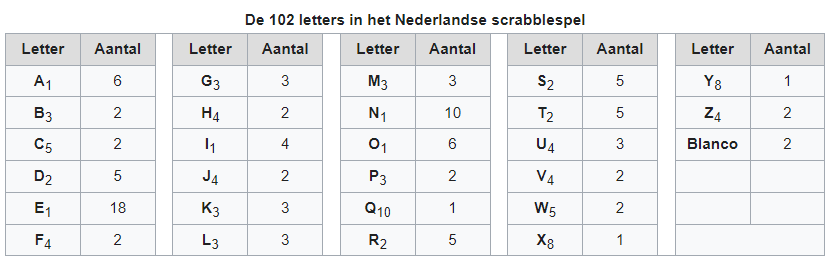

Programmeren Basis - Deel 09 - Oefeningen¶
Opmerking
We raden je aan om zoveel mogelijk oefeningen te maken, dat is de beste voorbereiding.
Als je te ver achterop raakt bij het volgen van deze cursus, dan zul je daar wellicht niet de tijd voor vinden want het zijn er behoorlijk veel.
Waarschuwing
Enkele aandachtspunten bij het oplossen van deze oefeningen :
Vroegtijdig een loop beëindigen¶
Oefening D09zoekdier¶
Begin een programma met
en schrijf de rest van de code zodat het de gebruiker om een dier vraagt. Het programma meldt vervolgens of het wel of niet om een boerderijdier gaat. Dit programma is hoofdletterONgevoelig.
Oefening D09herkansing¶
Schrijf een programma dat op basis van een puntenlijst meldt of er al dan niet een herkansing moet ingericht worden. Indien er minstens 1 student een onvoldoende behaalde (score<10) moet er een herkansing worden ingericht.
Gebruik de volgende puntenlijst in je programma :
Parallelle arrays¶
Oefening D09buisvakken¶
Begin een programma met de volgende twee arrays :
string[] vakken={"Frans", "Engels", "Wiskunde", "Duits", "L.O."};
int[] scores={34, 55, 20, 10, 80};
De punten voor een vak staan steeds op de overeenkomstige positie in het punten array. Bv. op index 1 vinden we dat de student voor het vak Engels een score van 55 behaalde (op 100).
Schrijf een programma dat toont voor welke vakken de student een onvoldoende behaalde.
Oefening D09toonscore¶
Begin weer met dezelfde twee arrays als in de vorige oefening :
string[] vakken={"Frans", "Engels", "Wiskunde", "Duits", "L.O."};
int[] scores={34, 55, 20, 10, 80};
Het programma vraagt de gebruiker om de naam van een vak en toont vervolgens de score van die student. Het programma zoekt hoofdletterONgevoelig.
Indien het vak niet gevonden wordt, toont het programma "geen score bekend".
Enkel voorbeelduitvoeringen :
Oefening D09morse¶
Toen de communicatie over lange afstanden nog per telegraaf verliep, gebruikte men Morse code om teksten om te zetten naar een opeenvolging van lange en korte elektrische signalen. Die lange en korte signalen noteren we hieronder met streepjes en stipjes.
Bijvoorbeeld, de letter B komt overeen met de combinatie lang kort kort kort en we noteren dit als - . . . in Morse code.
Schrijf een programma dat de gebruiker telkens om de Morse code voor een letter vraagt en zo gaandeweg een tekstbericht opbouwt.
Gegeven zijn de volgende twee declaraties :
string[] morse = { ".-", "-...", "-.-.", "-..", ".", "..-.", "--.", "....", "..", ".---", "-.-", ".-..", "--", "-.", "---", ".--.", "--.-", ".-.", "...", "-", "..-", "...-", ".--", "-..-", "-.--", "--.." };
char[] letters = { 'a', 'b', 'c', 'd', 'e', 'f', 'g', 'h', 'i', 'j', 'k', 'l', 'm', 'n', 'o', 'p', 'q', 'r', 's', 't', 'u', 'v', 'w', 'x', 'y', 'z' };
Dit zijn twee parallelle arrays waarmee je de omzetting van een letter naar diens Morse code kunt maken :
-
vind je een letter op positie
iin arrayletters-
dan staat de morse code voor die letter op dezelfde positie
iin hetmorsearray-
bv. de
fstaat op positie5inlettersen op die positie5in arraymorsestaat..-. -
dus
fkomt overeen met..-.
-
-
Je kunt ook de omgekeerde omzetting opzoeken, dus van een morse code naar een letter :
-
vind je een morse code op positie
iin arraymorse-
dan staat de letter voor die code op dezelfde positie
iin hetlettersarray-
bv. de morse code
-…vinden we op positie1in arraymorseen op die positie1in arraylettersstaatb -
dus
-…komt overeen metb
-
-
Een voorbeeld uitvoering :
Morse code voor de volgende letter (. voor kort, - voor lang) ?: -...
Opgebouwde tekst tot nu toe : b
Morse code voor de volgende letter (. voor kort, - voor lang) ?: .-
Opgebouwde tekst tot nu toe : ba
Morse code voor de volgende letter (. voor kort, - voor lang) ?: -..--. (1)
Ongeldige morse code! (1)
Opgebouwde tekst tot nu toe : ba (1)
Morse code voor de volgende letter (. voor kort, - voor lang) ?: .-..
Opgebouwde tekst tot nu toe : bal
- de ongeldige Morse code
-..--.wordt genegeerd
Indien je een bepaalde Morse code niet terugvindt in array morse mag je ervan uitgaan dat het een ongeldige code is en moet deze genegeerd worden.
Oefening D09scrabble¶
Schrijf een programma dat de gebruiker vraagt om een woord in te typen en vervolgens de Scrabble woordscore toont.
Je mag ervan uitgaan dat de gebruiker steeds exact 1 woord ingeeft, dus alle symbolen zullen letters zijn (geen cijfers, geen leestekens).
Elke letter van het alfabet heeft een score die op de overeenkomstige blokjes staat, je kunt deze opzoeken op de Wikipedia pagina voor Scrabble. De blanco blokjes zijn voor ons niet relevant.

Daar zie je bv. dat een A 1 punt waard is, een B 3 punten, een C 5 punten, enz. Hoofdletters en kleine letters krijgen dezelfde score.
Een voorbeeld uitvoering :
Verdere oefeningen op arrays¶
Oefening D09dagnummernaarmaand¶
Deze oefening is gebaseerd op oefening D04dagnummer.
Schrijf een programma dat de gebruiker vraagt om een dagnummer in het jaar (i.e. van 1 t.e.m. 365, dus geen schrikkeljaar). Het toont vervolgens in welke maand (als tekst) die dag zich bevindt.
Gebruik hiervoor deze twee arrays :
int[] aantalDagen = { 31, 28, 31, 30, 31, 30, 31, 31, 30, 31, 30, 31 };
string[] maandNamen = { "Januari", "Februari", "Maart", "April", "Mei", "Juni", "Juli", "Augustus", "September", "Oktober", "November", "December" };
Enkele voorbeeld uitvoeringen
Oefening D09maximumtemperatuur¶
Schrijf een programma dat de minimum en maximumtemperatuur van een bepaalde dag weergeeft, gebaseerd op een lijst van meetwaarden van die dag.
Een waarde van -9999.0 wijst op een sensorprobleem en moet genegeerd worden.
Om te testen gebruik je deze lijst :
double[] meetwaarden = { 13.4, 12.1, 10.8, 10.8, 10.3, 8.9, 7.9, 7.8, 7.4, 7.2, 6.4, 9.7, 13.7, 17.2, 19.6, -9999.0, -9999.0, 22.4, 22.7, 22.8, 22.3, 18.4 };
Let op : je mag er niet van uitgaan dat er 24 waarden inzitten. Een echte lijst kan net zo goed leeg zijn, of enkel maar sensorproblemen bevatten.
Je kan dit testen met de volgende lijsten :
Oefening D09speelkaarten¶
Schrijf een programma dat alle 52 speelkaarten op het scherm weergeeft.
In je programma begin je met deze twee arrays :
string[] kleuren = {"harten", "klaver", "schoppen", "ruiten" };
string[] waarden = {"twee", "drie", "vier", "vijf", "zes", "zeven", "acht", "negen", "tien", "landbouwer", "dame", "koning", "aas" };
Je programma bouwt vervolgens een array van 52 strings op die kaarten voorstellen, bv. "harten twee", "klaver negen", "schoppen aas", enz.
De output van dit programma ziet er zo uit :
harten twee
harten drie
harten vier
harten vijf
... (stuk weggelaten)
ruiten dame
ruiten koning
ruiten aas
Oefening D09aantalkarakters¶
Schrijf een programma dat de som van het aantal karakters van een reeks woorden kan bepalen.
In je programma begin je met een woorden array :
string[] woorden;
woorden = new string[] { "dit", "zijn", "een", "aantal", "woorden" }; // 3,7,10,16,23
//woorden = new string[] { "dit", "zijn", "dan", "weer", "wat", "andere", "woorden" }; // 3,7,10,14,17,23,30
// (1)
// (2)
Console.WriteLine(string.Join(',', aantalKarakters));
-
Creëer een nieuwe array voor de
intwaardes. -
Vul deze op met de som van het aantal karakters.
Je programma bouwt vervolgens een array met plaats voor evenveel int waardes als er woorden zijn in het woorden array.
Het nieuwe array vul je op met het aantal karakters van het woord op de corresponderende positie in het woorden array, en alle woorden op voorafgaande posities.
-
Het eerste element in deze array zal 3 zijn: het woord dit bestaat immers uit 3 karakters.
-
Het tweede element is 7: 3 verhoogt met 4, het aantal karakters van het woord zijn.
-
Het derde element is 10: 7 verhoogt met 3, het aantal karakters van het woord een.
-
…
De output van dit programma ziet er zo uit :
Of mogelijks…
Indien het woorden array de andere woorden bevat.
Oefening D09durstenfeld¶
Breid de vorige oefening uit zodat het array met kaarten dooreengeschud wordt en toon dan pas alle kaarten in hun willekeurige volgorde.
Merk op dat dit geen kwestie is van telkens een random getal te nemen en dan de kaart op die positie te tonen. Want naarmate je vordert wordt de kans steeds groter dat je een dubbele krijgt en om dat te vermijden wordt de code nogal complex.
Een veel simpelere manier is de Durstenfeld shuffle (a.k.a. het moderne Fisher-Yates algoritme) te gebruiken. Hoe dit werkt zie je in deze video demonstratie.
Let op : hij begint per ongeluk niet alfabetisch (G en F zijn al op voorhand verwisseld). De beginsituatie is :
| Waarde | A | B | C | D | E | G | F | H |
| Index | 0 | 1 | 2 | 3 | 4 | 5 | 6 | 7 |
Oefening D09getalfrequentie¶
Schrijf een programma dat de gebruiker om getallen vraag tussen 0 en 10 (grenzen inclusief) totdat de gebruiker 'stop' intypt (hoofdletterongevoelig).
Na afloop toont het programma hoe vaak elk van de ingevoerde getallen voorkwam.
Een voorbeeld uitvoering :
Geef een getal in [0,10] : 2
Geef een getal in [0,10] : 7
Geef een getal in [0,10] : 7
Geef een getal in [0,10] : 2
Geef een getal in [0,10] : 6
Geef een getal in [0,10] : 7
Geef een getal in [0,10] : StOP
2 kwam 2 keer voor
6 kwam 1 keer voor
7 kwam 3 keer voor
Oefening D09zoekhistoriek¶
Een programma houdt de 5 laatst ingetypte zoektermen bij, in een zoekhistoriek.
Schrijf een programma dat de gebruiker om een nieuwe zoekterm vraagt en deze in de zoekhistoriek stopt. Vermits de historiek van een vaste grootte is, moet er natuurlijk een oudere zoekterm verloren gaan want we houden er ten allen tijde maar 5 bij.
Begin met deze historiek :
string[] zoekhistoriek = {"Charlie Sheen", "Hot shots", "Winning", "Electrabel storing", "Geen elektriciteit"};
De recentste zoektermen staan meer naar achter in de historiek. Dit betekent dat de recentste zoekterm steeds achteraan erbij komt en dat de oudste (op positie 0) verdwijnt uit de historiek.
Indien de gebruiker meermaals dezelfde zoekterm intypt, komt die gewoon meermaals voor in de historiek.
Het programma toont eerst de zoekhistoriek op 1 regel (zoektermen gescheiden met een : symbool). Daarna wordt de gebruiker om een nieuwe zoekterm gevraagd.
Telkens de gebruiker een zoekterm ingeeft, wijzigt de historiek zoals hierboven beschreven en wordt ze opnieuw getoond.
Het programma eindigt nooit.
Een voorbeeld uitvoering :
Charlie Sheen:Hot shots:Winning:Electrabel storing:Geen elektriciteit
Nieuwe zoekterm : werking zekeringskast
Hot shots:Winning:Electrabel storing:Geen elektriciteit:werking zekeringskast
Nieuwe zoekterm : verbrande vingertoppen verzorgen
Winning:Electrabel storing:Geen elektriciteit:werking zekeringskast:verbrande vingertoppen verzorgen
Nieuwe zoekterm : elektricien regio gent
Electrabel storing:Geen elektriciteit:werking zekeringskast:verbrande vingertoppen verzorgen:elektricien regio gent
Nieuwe zoekterm :
Strings¶
Oefening D09toongetallenmetjoin¶
Schrijf een programma dat de getallen in een int[] netjes gescheiden door komma’s op de console zet, dit is een variatie op oefening D08toongetallen
Probeer dit uit met het volgende array :
Het programma toont…
Oefening D09geenscheldwoorden¶
Schrijf een programma dat de gebruiker om een tekst vraagt en vervolgens toont of deze tekst al dan niet aanvaardbaar is. De tekst wordt enkel aanvaard indien er geen scheldwoorden in voorkomen (op basis van een lijst). De zoektocht naar scheldwoorden is hoofdletterongevoelig.
Kies zelf je 10 favoriete scheldwoorden op https://nl.wiktionary.org/wiki/Categorie:Scheldwoord_in_het_Nederlands
Oefening D09censuur¶
Schrijf een programma dat de gebruiker om een tekst vraagt en vervolgens diezelfde tekst gecensureerd weergeeft. Elk scheldwoord (uit een voorgedefiniëerde lijst) wordt vervangen door een even lange rij sterretjes, bv. druiloor wordt vervangen door ********. De zoektocht naar scheldwoorden is hoofdletterongevoelig.
Gebruik dezelfde lijst met scheldwoorden als in de vorige oefening.
Let op :
-
een scheldwoord kan meermaals voorkomen
-
een scheldwoord kan op vele manieren geschreven worden met hoofdletters en kleine letters, die moeten allemaal gecensureerd worden
-
de gecensureerde versie moet gelijk zijn aan het origineel qua hoofdletters en kleine letters van de rest van de tekst.
Oefening D09censuuruitbreiding¶
Pas de oplossing van D09censuur aan zodat de eerste en laatste letters van het scheldwoord NIET worden vervangen door een sterretje.
Bijvoorbeeld, De grootste druiloor van Gent wordt De grootste d******r van Gent.
Let erop dat ook hier hoodletter / kleine letters bewaard moeten blijven!
Dus bv. De grootste DruilooR van Gent wordt De grootste D******R van Gent.
Oefening D09langstewoord¶
Schrijf een programma dat de gebruiker om een tekst vraagt en vervolgens toont hoeveel woorden erin voorkomen en wat het langste woord is. Indien er meerdere woorden zijn van die lengte, toon dan het eerste. Je mag ervan uitgaan dat woorden enkel door spaties, komma’s, punten, uitroeptekens en vraagtekens gescheiden worden.
Geef een tekst : Het werd donker, de kinderen haastten zich naar huis...
aantal woorden : 9
langste woord : kinderen
Oefening D09dierenwissen¶
Begin een programma met
Het programma toont de boerderijdieren met een spatie ertussen en vraagt de gebruiker welk dier hij wil wissen (hoofdlettergevoelig).
In het array wordt de tekst van dat gewiste dier vervangen door de speciale null waarde. Indien het dier niet gevonden wordt, gebeurt er niks.
Daarna toont het programma de lijst opnieuw en herhaalt het de vraag.
Let op : op de plaatsen waar er geen boerderijdier meer voorkomt, verschijnt de tekst GEWIST maar deze komt niet letterlijk in het array voor (daar staat immers null op zo’n positie).
Het programma eindigt nooit.
Een voorbeeld uitvoering :